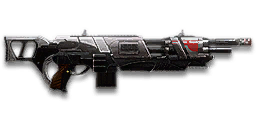

← Back to the Cycler TRV comparison
Sage Guide · Terran Republic · Combat Medic
The Terran Republic's fastest-firing assault rifle: 845 rounds a minute, the quickest body-shot kill of any rifle in the game — and the wildest recoil to match. This page teaches a new Combat Medic to ride it instead of fighting it.
The one-line verdict: it kills faster than every starter rifle at every range, but only if you burst it. Hold the trigger down and the cone of fire eats your advantage alive. Fight inside 30 metres, in bursts of 5, and it will carry you.

The Cycler TRV · Terran Republic · 40-round magazine · 650 certs to unlock
Picture the scene, because you've probably lived it: you're sprinting across a courtyard, an enemy appears, and you do everything at once — hold the trigger down while you're still running, then press aim-down-sights (ADS) a split-second later, finger still down. The sight picture snaps in, it looks precise… and your bullets spray everywhere except the man in your crosshair. He kills you. It feels like the game cheated. It didn't — here's what actually happened.
Three moments, one disaster. Read it left to right:
The scope only gives you a precise picture; the bullets keep flying out of the wide cone you built while running and hipfiring. That's the whole mystery: accurate-looking aim, wildly inaccurate gun.
You started firing from a sprint, from the hip. Sprinting is the least accurate state in the game: your cone of fire starts at 7.0° — fully bloomed, the widest it can ever be. Every shot you fire from the hip widens it further still (+0.10° per shot).
Then you pressed ADS mid-hold — and nothing reset. Aiming down sights does not shrink a cone of fire that is already bloomed. The scope only gives you a precise picture; the bullets keep flying out of the wide cone you built while running and hipfiring. That's the whole mystery: accurate-looking aim, wildly inaccurate gun.
Two timers stack the deck further: your gun needs about 0.3 s to settle after a sprint, and raising the sight itself takes ~0.15 s. Trigger held through all of it means your first half-second of fire is pure confetti — and at 845 RPM, that's six rounds gone before you even start aiming.
1 · Feet. Let go of sprint (and the trigger, if you're already holding it). Stop, or drop into a strafe — anything but a full sprint.
2 · Sight. Press ADS and let the sight come up. This takes a heartbeat — that's fine, your revive tool and your squadmates cover it. As a Medic you are rarely alone; use the half-second.
3 · Trigger. Now fire. Starting from the aimed cone of 0.10°, your first shots land where the dot points, and you control the bloom from zero instead of inheriting a maxed-out cone.
Stop → aim → fire. If you take one habit from this entire page, take this one. You'll practise exactly this rhythm in the simulator in section 04.
Do them in this order, every time. Skipping a beat is how the spray comes back.
~0.3 s · sprint-settle
Release sprint and the trigger. Let the 7.0° sprint cone collapse. Plant your feet or strafe — anything but a full sprint.
~0.15 s · sight-raise
Press ADS and let the sight come up. The cone is now 0.10° — seventy times tighter than the sprint cone you just left.
From the 0.10° cone
Now hold the trigger — in bursts of 5. Your first shots land where the dot points, and you grow the bloom yourself, from zero.
Inside ~8 metres, don't ADS at all — hipfire and keep moving. At arm's length the hipfire ring still covers the chest (section 05 draws it), and scoping in costs you 0.15 s plus half your move speed. Stopping is optional here too: strafe while you hose the chest — the 845 RPM forgives a miss or two that a slower gun wouldn't. The disaster above is a mid-range problem: close enough that you reached for the sight, far enough that the spray missed. When in doubt: release everything, aim, then shoot.
Every enemy infantry has 1,000 health (500 shield + 500 health). Your bullet does 143 damage up close, fading to 100 at long range. Headshots count double, leg shots count less (×0.9). That gives you four numbers worth memorising — and notice how fast the kill gets expensive with range:
| Range | Damage | Head | Chest | Legs | Chest TTK |
|---|---|---|---|---|---|
| Close · 0–10 m | 143 | 4 | 7 | 8 | 426 ms |
| Mid · 11–30 m | 142→126 | 4 | 8 | 9 | 497 ms |
| Long · 31–47 m | 125→111 | 5 | 9 | 10 | 568 ms |
| Far · 48 m+ | 110→100 | 5 | 10 | 12 | 639 ms |
Perfect-accuracy times to kill: 4 headshots ≈ 0.21 s, 7 chest shots ≈ 0.43 s up close. In real fights you'll land maybe half your rounds — still, this is why the head matters so much on this gun. And the magazine holds 40 rounds: at 7–10 shots a kill, that's 4–5 kills per magazine if every round lands, two or three in real life. The 845 RPM is a gift and a tax — it empties the magazine in 2.84 seconds flat.
Full power to 10 m, then a steep slide to minimum at 60 m — the fastest falloff of any starter-adjacent rifle. The gold line shows Soft Point Ammunition, which stretches full power to 15 m.
One gun, four fighting styles. The right technique changes with distance — use the range finder below to see what your bullets do at any range, then learn the four bands underneath it.
How to fight hereAim down sights at the upper chest and neck. Fire in bursts of 5 — your recoil climbs up-left into the head for free damage.
Aim: centre of the chest, from the hip. Keep moving.
Scoping in costs you 0.15 s and halves your move speed — at arm's length that gets you killed. The TRV's hipfire is poor for a rifle (2.5° standing, 3.0° moving), but at this distance the ring still covers the chest, and 845 RPM forgives the odd miss. Strafe side to side (A/D) while firing so you're hard to track.
Aim: neck / upper chest. Bursts of 5 rounds.
This is where the gun earns its keep: near-full 143–130 damage, the fastest time to kill of any assault rifle. Start your crosshair at the neck — the natural climb walks your shots up-left into the head, and 4 head hits end the fight in about a fifth of a second. Strafe between bursts; you're slower while scoped, but a moving target still beats a still one.
Aim: chest. Bursts of 5 rounds, pause between them.
Damage is sliding toward 111 and your cone of fire blooms if you hold the trigger. Fire a burst, release for a split second to let accuracy reset, fire again. The recoil drifts up and to the left (−20°/−17°), so pull your mouse gently down and to the right. Crouch or stand still when you can — both tighten your shots.
Aim: chest. Taps of 3–5 rounds at exposed targets only.
At 100 damage you need 10 chest hits — a long, loud advertisement of your position, and every one of them has to land while the gun kicks. Take these shots at stationary or fleeing targets, medics reviving, and engineers on turrets. Otherwise, your better play is to close the distance behind cover — or get back to healing your squad. Knowing when not to shoot is a skill too.
Your accuracy is decided by two things before skill even enters it: what your body is doing (your stance sets the starting cone of fire) and what your finger is doing (holding the trigger grows that cone with every shot). The TRV has an auto / semi-auto switch, but semi-auto isn't the answer — tap-firing in full-auto does the same thing without fumbling for a key. So "firing modes" are something you do with your finger, not a setting on the gun.
| Stance | Starting cone | What it means for you |
|---|---|---|
| Sprinting | 7.0° | Maxed out — the widest the cone can be. This is the section 01 disaster: never start firing from a sprint. |
| Hipfire, moving | 3.0° | Walking or strafing from the hip. Fine inside ~8 m, leaks rounds past the target beyond it. |
| Hipfire, standing | 2.5° | Your point-blank default. The 0.35 m ring at 8 m in section 05 is this stance drawn out. |
| Hipfire, crouched | 2.0° | The tightest hipfire you have (2.5° if you crouch-walk). Crouch when holding a doorway from the hip. |
| Aimed (ADS), feet planted | 0.10° | Standing or crouched makes no difference here — twenty-five times tighter than hipfire. This is why section 01's order matters. |
| Aimed (ADS), strafing | 0.35° | The moving floor while aiming — never "still + bloom". You move at half speed (0.5×). Strafe between bursts to stay hard to hit; plant your feet during each burst. |
| Mode | How your finger does it | Use it at |
|---|---|---|
| The mag dump | Hold the trigger and don't let go | Point blank only, or suppressing a doorway. Bloom maxes out fast — past ~8 rounds you're spraying, not aiming. The whole magazine is gone in 2.84 s. |
| Bursts — the default | Hold for 5 rounds, release ~0.15 s, hold again. 6–8 rounds is fine while you're learning | Almost everything, 8–50 m. Each release resets the cone, so every burst starts at 0.10°. |
| Tap-fire | Short taps of 3–5, or single clicks, with a real pause between | 50 m and out, at exposed or stationary targets. Slow, but every round goes where the dot is. |
Standing still, your first 5 aimed shots are the ones the ADAD rhythm protects — but the cone still grows 0.05° with every shot from shot 1. There are no free shots: the window is about your movement, not the gun.
A target 30 m away, aiming down sights. Press and hold FIRE (mouse, touch, or hold Space with the button focused) and watch the holes walk wider the longer you hold — that's firing from an ever-growing cone. Release, let the cone reset, fire again. Aim for bursts of 5; 6–8 is tolerable while you're new. This practice window is shared by the whole Sage series: it's driven by a weapon profile plugged into the window — here the Cycler TRV's (845 RPM, 0.10° starting cone, 0.05° bloom per shot, target at 30 m) — and the spread is drawn at true scale from those numbers.
Cone of fire — fills as you hold, empties when you release.
Your bursts will be graded here — green at 5 rounds, tolerable up to 8.
Some things are easier to show than to say. Here's what your bullets actually do: how wide hipfire spreads at 8 metres, what a good burst rhythm looks like, and what the 2x sight really changes. The hands-on version — holding the trigger yourself — is the practice window in section 04.
A full-size target 8 m away — an arm's-length room fight. The rings show where hipfire rounds land around your aim point (the chest). Sizes are drawn to scale from the gun's real cone-of-fire numbers.
Read it this way: standing still, the 0.35 m ring roughly covers the chest — most rounds hit a target this size, which is why hipfire works point-blank even on this gun. But move and it grows to 0.42 m — wider than the torso — so the edge rounds start leaking past him, and the rings only grow with distance while the man doesn't. Past ~10 m that's rounds missing entirely: the exact moment to switch to aiming down sights, where the spread shrinks to a dot. (Ring sizes use the real geometry: spread diameter = 2 × distance × tan(cone ÷ 2).)
Every shot widens your cone of fire ("bloom"). Releasing the trigger for a heartbeat resets it. Same 18 rounds, two very different outcomes:
The target pattern is bursts of about 5 rounds — that's the ideal. Bursts of 6–8 are fine while you're new (call it newbie tolerance). Past that, the bloom (0.05° per shot aimed, 0.10° from the hip) keeps growing with every shot, so the extra bullets mostly decorate the wall behind your enemy instead of hitting him. Short bursts also leave you rounds for the second enemy — remember, the magazine is only 40, and at 845 RPM a held trigger eats it in under three seconds.
No zoom. The target at 35 m is small but the view is wide open — you see the crate, the tower, and the next enemy coming. Fast to aim, nothing blocks your edges. Best inside ~40 m.
Same target, same 35 m — but he looks twice as tall, so placing shots on his chest and head gets much easier. The price: your view narrows to the round window, the crate and tower are gone, and close targets feel fast and huge. Best at 25–50 m.
That's the whole 30-cert decision from section 06 in one picture: 1x for awareness, 2x for precision. Most veterans carry both and swap per base — indoors 1x, open ground 2x.
One honest warning first: unlike the free starter rifles, nothing on this gun is free except the iron sights — the TRV itself costs 650 certs, and every attachment below costs certs on top. The good news is that the two most important buys are cheap. Buy in the order shown and stop whenever the gun feels right.
The default open sights. Usable, but the front post eats the middle of your target at range.
Good: your first fights while you save 30 certs for a reflex sight.
Bad: as a permanent choice — a 1x red dot is the cheapest real upgrade in the game.
A clean red-dot sight with no zoom. Your default once you own it, and honestly your best all-round option.
Good: everywhere indoors and out to ~40 m — which is most PlanetSide fights.
Bad: picking out targets past 50 m; that's what the 2x is for.
Doubles your view magnification. Costs almost nothing — the price of a kill or two.
Good: open-field bases, tower fights, and your 25–50 m burst game. Swap between 1x and 2x per fight.
Bad: tight indoor rooms — the zoom makes close targets feel fast and huge.
Night-vision sight: enemies glow white against a dark view, and it sees through smoke.
Good: night fights, smoky doorways, spotting infiltrators by their outline.
Bad: daytime and long range — its view is short-ranged and washes out in bright light.
DMO / HDS (3.4x) and TMS / ACS (4x) — sniper-style magnification on a bullet hose.
Good: almost nothing a beginner does — recoil magnifies too, and tunnels your vision.
Bad: any fight inside 30 m, which is where you'll spend your first hundred hours.
The TRV's recoil is wild but learnable, and no barrel fixes the cone of fire. Plenty of veterans run this slot empty.
Good: your first weeks. Spend certs on your Medic tool and suit first.
Bad: nothing — there's no downside to an empty slot.
Cuts vertical recoil by 15% — the single biggest help for this gun's upward climb. Costs you: hipfire spread grows, and enemies see you on the minimap from 35 m farther away when you fire.
Good: if you mostly aim down sights at mid-range and the upward climb bothers you.
Bad: hipfire builds and sneaky play — you get louder on the map and sloppier from the hip.
Hipfire bloom grows 40% slower — much steadier hip spraying. But vertical recoil rises 20% when you do aim.
Good: a dedicated close-quarters build paired with the Laser Sight.
Bad: general play — it taxes the aimed shooting you'll do most, on a gun whose recoil is already the hard part.
You vanish from the minimap when firing and your shots are quiet. In exchange, damage starts dropping off 20 m sooner and bullets fly 15% slower (550 → 468 m/s) — harder to lead moving targets.
Good: flanking behind enemy lines, rooftop and tree work, solo play behind the front.
Bad: front-line fighting where everyone already knows where you are — you pay the damage cost for stealth you don't need.
Hides your muzzle flash so your own view stays clear at night — but you appear on enemy minimaps from 15 m farther away.
Good: night fights where your own flash blinds you. A comfort pick, nothing more.
Bad: as an early purchase — it changes no fight outcome. Buy it last, if ever.
Cuts side-to-side recoil by 25%, keeping your bursts on a single target. Tiny cost: weapon swap is 0.15 s slower.
Good: the default for aimed, mid-range play — on this gun, with its 0.272–0.295 horizontal recoil, it earns its keep from day one.
Bad: nothing meaningful. It only stops helping if you never aim down sights.
Hipfire accuracy improves by a third (33% tighter cone). Replaces the Forward Grip — you can't have both.
Good: indoor point-holds and stairwell fights where you hipfire inside 8 m.
Bad: open bases — you give up aimed recoil control for a bonus you rarely use.
The first shot of each burst kicks 60% less — but side-to-side recoil rises 10% on everything. On this gun the trade is genuinely tempting: the first-shot kick is ×3.0, the harshest in the class.
Good: disciplined burst and tap-fire at 25 m+, where every burst starts fresh and the first shot matters most.
Bad: longer bursts and hipfire play — the sideways penalty shows up on every shot after the first.
A torch whose beam reveals cloaked infiltrators. Toggle it with the attachment key (X by default).
Good: hunting a stalker infiltrator camping your capture point — sweep corners with it.
Bad: as your everyday rail — it gives zero accuracy help, and the beam advertises your position.
Full 143 damage now reaches to 15 m instead of 10 m (the gold line on the chart above). Cost: bullets fly 10% slower (550 → 495 m/s).
Good: nearly always — most duels happen at 10–20 m, exactly where this extends your 7-shot / 4-headshot kill.
Bad: long-range duels against runners, where the slower bullet needs more lead. A small price.
0 certs · Day one (after the 650-cert gun)
What 650 certs buys you. Genuinely dangerous already — learn the burst rhythm on this before spending anything more.
230 certs · Recommended
The best value in this whole guide. Covers every fight from a doorway to a tower courtyard.
230 certs · Indoor brawler
Built to hipfire down stairwells and hold a capture point room. Swap back to the All-Rounder outdoors.
200 certs · Flanker
No minimap blip, quiet shots, tight hipfire for the kills you take from behind. Weak in a fair fight — so don't take fair fights.
The three beats from section 01, every single time. Feet, sight, trigger — in that order. It's the difference between a 0.10° cone and a 7.0° one, and it's free.
Headshots deal double damage: 4 kills up close versus 7 to the chest. Don't aim at the head directly — aim at the neck and let the gun's natural climb carry shots two and three up-left into the skull. It's the single biggest damage upgrade you own, and it's free.
Every shot widens your cone of fire by 0.05° aimed. Holding the trigger past ~8 rounds at range means later bullets fly around your target, not into it. Five rounds is the ideal burst; release the trigger for a heartbeat between bursts — your accuracy resets and your hits per magazine roughly double.
Reloading with even 1 bullet left takes 3.12 s; an empty gun takes 4.13 s — an eternity mid-fight, and the slowest reload of any rifle on this page. Count roughly: after two kills or ~30 rounds, duck behind cover and reload early. Treat the last 10 rounds as your emergency reserve, not your working magazine — and keep your sidearm in mind for the gap.
Walk with your crosshair at head height, pointed where an enemy's head will appear — a doorway edge, a corner, stairs. Most beginners lose fights in the half-second spent dragging the crosshair onto target. While firing, tap A/D to strafe between bursts: a moving Medic is dramatically harder to headshot back, even at half speed while scoped.
You're the Medic, not a duellist: your damage falls off a cliff past 30 m, while your revive tool never does. Pick fights inside 30 metres, win them in under half a second, then get back to keeping the squad alive. A revive is worth more than a long-range plink that only tells the enemy where you are.
Every gun has a price. Here's where the Cycler TRV pays — and the habit that covers each hole.
Vertical recoil 0.25 with a ×3.0 first-shot kick, horizontal recoil 0.272–0.295 with a 0.816 tolerance, drifting up and to the left (−20°/−17°). The gun only starts recovering at 18°/s after a 71 ms delay, so in a long burst your aim walks off the target's left shoulder — you'll see this clearly in the VR drill below.
Play around it: pull your mouse down-right while firing, in the opposite direction of the climb. The Forward Grip already trims the sideways part by 25%, and 5-round bursts keep the kick from stacking.
100 damage by 60 m means 10 chest shots to kill at 48 m and beyond — while the NC1 Gauss Rifle is still doing 125 damage out to 90 m. Long range is not your ground.
Play around it: tap-fire at exposed targets only, and spend the rest of the time closing distance. You're a Medic — the front line, and the revive, is your address.
3.12 s with rounds left, 4.13 s on empty — the slowest reload of the five rifles on this page, on a gun that empties its 40-round magazine in 2.84 seconds flat. And there is no extended magazine for this gun at all.
Play around it: burst discipline (habit 3) and early reloads (habit 4). Reloading often behind cover is the design, not a failure — and your pistol exists for the moment you get caught dry.
2.5° standing and 3.0° moving from the hip — worse than the TAR and worse than every starter rifle. The spray cone is wide even before bloom starts.
Play around it: hipfire only inside ~8 m, where the ring still covers the chest (section 05). If you live indoors, the Laser Sight and Short Barrel build in section 07 is your answer.
Like most rifles, you move at half speed while aiming down sights (0.5×), and the gun takes 0.65 s to swap to — slow if a fight surprises you with your revive tool out.
Play around it: hipfire inside 8 m instead of scoping (that's the Point Hold build's whole idea), and swap weapons behind cover, never in the open.
Open the world map, travel to VR Training, and run these on the target dummies. Five minutes before a play session beats an hour of dying confused.
Aim at a wall 20 m away and empty a full magazine without touching the mouse. Watch the bullet pattern climb up-left — that's your gun's fingerprint. Repeat, this time pulling down-right, until the group stays fist-sized.
Walk the dummy range keeping your crosshair glued to neck height the whole time, snapping to each new target without dipping to the floor or sky. Slow and clean first; speed comes on its own.
At 30 m, kill dummies with bursts of 5, releasing the trigger fully between bursts. If a burst goes wide, shorten it. Goal: whole kills without a single wild round — and a feel for how fast 40 rounds disappear.
Pick a dummy, stand 5 m away, and circle it with A/D while hipfiring it down without stopping. This is your point-blank survival skill — the one that fires while your movement does the defending.
Fire exactly 30 rounds, step behind a pillar, reload, repeat. Train your hands to reload early and only in cover until it's automatic — in real fights you'll do it without thinking, which is the point. Feel the 3.12 s: it's long enough to get you killed in the open.